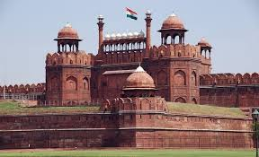
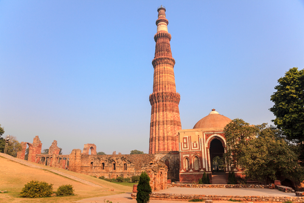
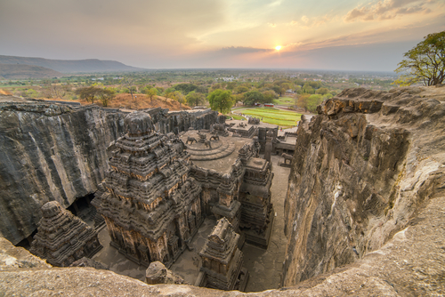
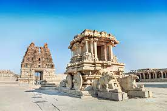
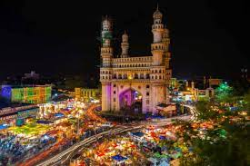

The Taj Mahal is located on the right bank of the Yamuna River
in a vast Mughal garden that encompasses nearly 17 hectares,
in the Agra District in Uttar Pradesh. It was built by Mughal Emperor Shah Jahan
in memory of his wife Mumtaz Mahal construction
starting in 1632 AD and completed in 1648 AD, with the mosque, the guest house and the main gateway on the south, the outer courtyard
and its cloisters were added subsequently and completed in 1653 AD. The existence of several historical and Quaranic inscriptions in
Arabic script have facilitated setting the chronology of Taj Mahal. For its construction, masons, stone-cutters, inlayers, carvers,
painters, calligraphers, dome builders and other artisans were requisitioned from the whole of
the empire and also from the Central Asia and Iran. Ustad-Ahmad Lahori was the main architect of the Taj Mahal.
more
2 . SANCI STUPA
Sanchi is a small town situated in the Raisen district of Madhya Pradesh, India. It is renowned for its ancient Buddhist site,
which is a UNESCO World Heritage site and a popular tourist destination.
Sanchi is located about 50 km northeast of Bhopal, the capital city of Madhya Pradesh, and is easily accessible by road or rail.
The probable reason for the establishment of Buddhist monuments at Sanchi is the city of Vidisha. This erstwhile capital of ancient
Eastern Malwa happened to be the populous and rich city of central India. The interest of the great Mauryan emperor Ashoka in Vidisha
and around was because his wife Devi belonged to Vidisha. In addition to this fact, the Sanchi hilltop was an ideal place for the
establishment of a monastery having a suitable atmosphere for meditation and other spiritual activities.
more

3 . RED FORT
The Red Fort or Lal Qila is a historic fort in the Old Delhi neighbourhood of Delhi, India,
that historically served as the main residence of the Mughal emperors. Emperor Shah Jahan commissioned construction of the Red Fort
on 12 May 1638, when he decided to shift his capital from Agra to Delhi. Originally red and white, its design is credited to architect
Ustad Ahmad Lahori, who also constructed the Taj Mahal.
The fort represents the peak in Mughal architecture under Shah Jahan and combines Persianate palace architecture with Indian traditions.
On 15 August 1947, the first prime minister of India, Jawaharlal Nehru, raised the Indian flag above the Lahori Gate. Every year on India's Independence Day (15 August), the prime minister hoists the Indian tricolour
flag at the fort's main gate.
more

4 . QUTUB MINAR
Qutb-Minar in red and buff standstone is the highest tower in India,. It has a diameter of 14.32 m,/ at the base and about 2.75 m, on the top with a height of 72.5 m.
Qutbu'd-Din Aibak laid the foundation of Minar in AD 1199 for the use of the mu'azzin (crier) to give calls for prayer and raised the
first storey, to which were added three more storeys by his successor and son-in-law, Shamsu'd-Din Iltutmish (AD 1211-36).
All the storeys are surrounded by a projected balcony encircling the minar and
supported by stone brackets, which are decorated with honey-comb design, more conspicuously in the first storey.
more
5 . GATE WAY OF INDIA
The Gateway of India is an arch-monument completed in 1924 on the waterfront of Mumbai (Bombay), India. It was erected to commemorate the landing of George V for his coronation as the Emperor of India in December 1911 at Strand Road near Wellington Fountain. He was the first British monarch to visit India.
The foundation stone was laid in March 1913 for a monument built in the Indo-Islamic style, inspired by elements of
16th-century Gujarati architecture. The final design of the monument by architect George Wittet was sanctioned only in 1914,
and construction was completed in 1924. The structure is a memorial arch made of basalt, which is 26 metres (85 feet) high,
with an architectural resemblance to a triumphial arch as well as Gujarati architecture of the time.
more

6 . AJANTA CAVES
The first Buddhist cave monuments at Ajanta date from the 2nd and 1st centuries B.C.
During the Gupta period (5th and 6th centuries A.D.), many more richly decorated caves were added
to the original group. The paintings and sculptures of Ajanta, considered masterpieces of Buddhist religious art,
have had a considerable artistic influence.Buddhist rock-cut cave temples and monasteries, located near Ajanta village,
north-central Maharashtra state, western India, that are celebrated for their wall paintings. The temples are hollowed out of
granite cliffs on the inner side of a 70-foot (20-metre) ravine in
the Wagurna River valley 65 miles (105 km) northeast of Aurangabad, at a site of great scenic beauty.
more
7 . KONARK SUN TEMPLE
Konark Sun Temple is a 13th-century CE (year 1250) Sun temple at Konark about 35 kilometres (22 mi) northeast from Puri city on
the coastline in Puri district,
Odisha, India. The temple is attributed to king Narasimhadeva I of the Eastern Ganga dynasty about 1250 CE.
Dedicated to the Hindu Sun God Surya, what remains of the temple complex has the appearance of a 100-foot (30 m) high chariot with
immense wheels and horses, all carved from stone. Once over 200 feet (61 m) high, much of the temple is now in ruins,
in particular the large shikara tower over the sanctuary; at one time this rose much higher than the mandapa that remains.
more

8 . HAMPI
Hampi or Hampe also referred to as the Group of Monuments at Hampi, is a UNESCO World
Heritage Site located in Hampi (City), Ballari district now Vijayanagara district, east-central Karnataka, India.Hampi predates the
Vijayanagara Empire; it is mentioned in the Ramayana and the Puranas of Hinduism as Pampa Devi Tirtha Kshetra.
Hampi continues as a religious centre, with the Virupaksha Temple,
an active Adi Shankara-linked monastery and various monuments belonging to the old city.[It was a fortified city.
Chronicles left by Persian and European travellers, particularly the Portuguese, say that Hampi was a prosperous, wealthy and grand city near the
Tungabhadra River, with numerous temples, farms and trading markets.
By 1500 CE, Hampi-Vijayanagara was the world's second-largest city.
more

9 . CHARMINAR
Charminar was built by Sultan Mohammed Quli Qutb Shah in 1591. It is said that this square shaped
structure with four pillars and intricate carvings was built in honour of his wife, Bhagmati. However, the
actual reason behind building Charminar is still not clear.
As per a popular belief, Charminar was built to acknowledge the elimination of the plague which had affected the entire city
immensely during that era. It is believed that the Sultan had prayed for the end of this plague with which his people were suffering.
Hence, as the plague ended, he built the charminar as a tribute to Allah.
The four pillars are also said to be dedicated to the first four caliphs of Islam.
more
10 . VICTORIA MEMORIAL
The Victoria Memorial is a large marble building on the Maidan in Central Kolkata, having its entrance on
the Queen's Way. It was built between 1906 and 1921 by the Government of India. It is dedicated to the memory of Victoria,
Empress of India from 1876 to 1901. It is the largest monument to a monarch anywhere in the world, it stands in 64 acres of
gardens and is now a museum under the control of the Ministry of Culture. Possessing prominent features of the Anglo-Indian
architecture of the
imperial era, it has evolved into one of the most popular attractions in the city.
more